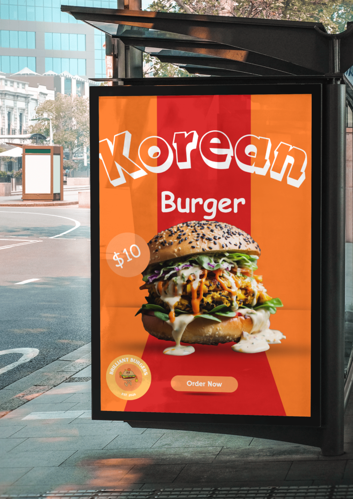

1. Learn
Read three short, named theory sections with worked examples.
Year 7 Technology · Digital and communication technologies
Build an original fast-food brand, communicate it through image, motion and web design, then explain the decisions that make it work.

Open largerYour design challenge
Plan the business, develop a visual identity, create promotional media and assemble the evidence in a clear web portfolio.
How the course works
Each module uses the same calm rhythm so you can focus on the next useful design decision.
Read three short, named theory sections with worked examples.
Use feedback-rich questions to correct misunderstandings.
Apply the concept to the Fast Food Futures project.
Save locally, back up and follow teacher submission directions.
Drive-first course. The current teacher-supplied images and demonstrations are placed beside the ideas they teach, with written and visual alternatives where needed.
Ten-module pathway